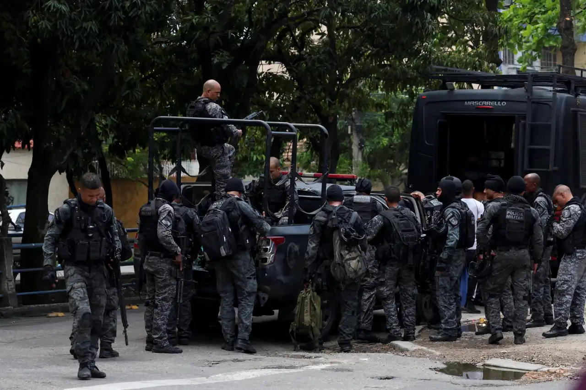

Confronto e tensão: BOPE realiza megaoperação no Rio
Ação busca capturar líderes do tráfico e retomar o controle de áreas conflagradas.

“Centenas no chão”
O preço da operação: lágrimas e cadáveres

“O fim do confronto”
Presos caminham escoltados pelo BOPE após 15 horas de tiroteio

"A dimensão da letalidade"
Imagem aérea mostra mais de uma centena de corpos alinhados na avenida após o confronto com o BOPE
Na madrugada de 28 de outubro de 2025, o Rio de Janeiro viveu a maior operação policial de sua história. Cerca de 2.500 agentes — entre BOPE, Polícia Civil e Militar — invadiram os Complexos do Alemão e da Penha com um único objetivo: desarticular o Comando Vermelho.
O saldo foi trágico: 121 mortos (115 suspeitos e 4 policiais), 113 presos (incluindo 10 adolescentes) e 118 armas apreendidas, sendo 91 fuzis e mais de uma tonelada de drogas.
O governo Cláudio Castro classificou a ação como “a mais letal da história do estado” e defendeu a estratégia do “muro do BOPE”: empurrar criminosos para a mata da Serra da Misericórdia, longe de áreas residenciais.
Opinião dos moradores

“Foi um filme de terror. Tiros o dia todo, helicóptero em cima de casa, criança chorando. Não deixaram nem a gente buscar remédio.”
“Uma grávida foi agredida por policial. Ela perguntou sobre mandado, ele respondeu: ‘Eu sou a lei, eu sou o juiz, mandado é o c*.’”
Escolas fechadas, ônibus desviados, clínicas sem atendimento. Comunidades em estado de sítio.
Defesa do governo e analistas

Octavio Guedes, colunista
“Pela primeira vez, levaram a guerra para onde só tem combatente. Não teve bala perdida em escola, não teve criança atingida. Foi uma vitória tática.”
Governador Cláudio Castro
“Ou soma no combate à criminalidade ou suma. Quem não entender que segurança pública é o maior problema do Brasil vai se arrepender e pedir perdão à sociedade.”
A operação mais letal da história do RJ
Entre o aplauso de quem quer segurança a qualquer custo e o grito de quem vive o horror nas favelas, o Rio segue dividido. O Ministério Público e a Defensoria Pública investigam denúncias de abusos.